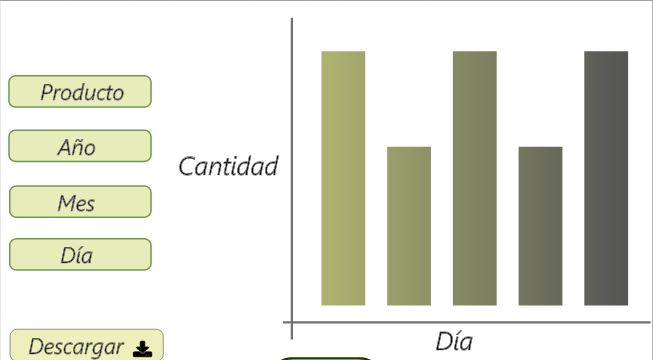

Gráficos del inventario
En este apartado podrá validar la cantidad de inventario que ingresa o sale, la cual se representa mediante gráficos:

En este apartado podrá validar la cantidad de inventario que ingresa o sale, la cual se representa mediante gráficos: